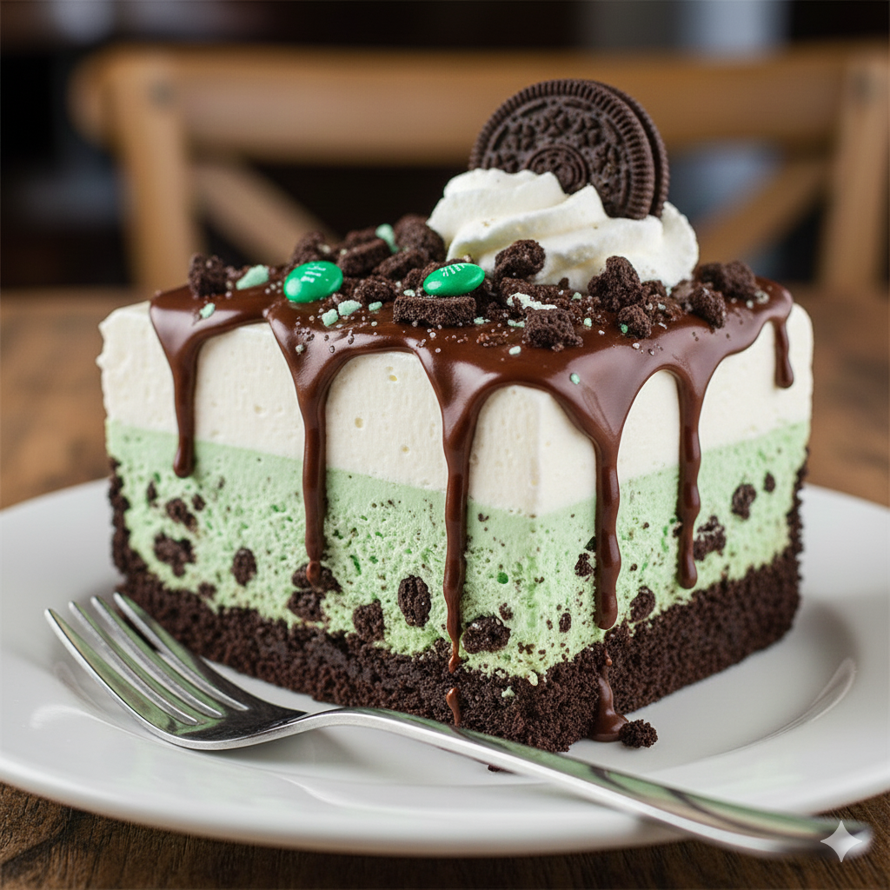

No-Bake Mint Chocolate Cookie Ice Cream Pie
Ingredients
| Ingredient | Amount |
|---|---|
| Mint Chocolate Chip Ice Cream | 3 pints |
| Chocolate cookie pie crust | 1 |
| Crushed mint chocolate Oreos | 1 1/2 cups |
| Whipped Cream | For topping |
Instructions
- Scoop 1 1/2 pints ice cream into crust and smooth.
- Sprinkle 1 cup crushed cookies, press lightly.
- Freeze 1 hour until solid.
- Top with remaining 1 1/2 pints ice cream.
- Top with whipped cream and 1/2 cup Oreos.
- Freeze at least 2 hours.